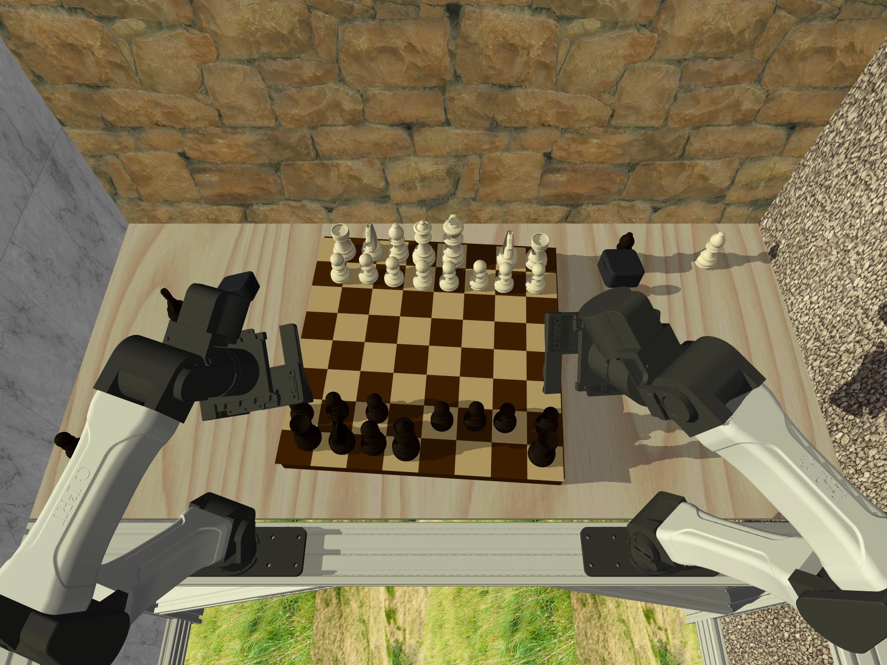

Learn invariance once.
Reuse it for every new policy.
Visual domain randomization usually asks each new policy to relearn which appearance changes to ignore. INVAR moves that work into a separate, task-agnostic pretraining stage.

Train each new policy on nominal renders.
encoder
Reuse learned invariance for zero-shot transfer.
Randomize during encoder pretraining. Freeze INVAR, then learn downstream behavior with clean simulation data. The representation is shared across tasks.
The videos illustrate the two pipelines; individual rollouts are qualitative examples, not aggregate success-rate comparisons.
Same state. Different appearance.
A consistent representation.
A simulator can render exactly the same underlying state in different ways. INVAR uses that correspondence as supervision: a student sees randomized images and learns to match a teacher that sees clean images.


Change appearance, preserve the scene.
Lighting, materials, table textures, camera extrinsics, and backgrounds vary. The simulator state stays fixed, so the pair provides a precise signal for which visual changes to ignore.
clean render ↔ randomized render
Full training pipeline and technical details

We fine-tune a DINOv3 ViT-S+/16 backbone (28.7M parameters), using two teacher crops, eight student crops, and 65,536 prototypes. Teacher centering, sharpening, and EMA updates follow the self-distillation recipe. The objective does not use task labels or rewards; the separate action probe is used for checkpoint selection.
Different robots. Shared visual structure.
Approximately 6.3 million clean–randomized pairs span dexterous grasping, bimanual manipulation, and humanoid loco-manipulation. Diverse embodiments, viewpoints, and tasks teach a reusable representation.


Downstream evaluation objects are excluded from encoder pretraining. Pouring and both parallel-gripper evaluation tasks also introduce unseen task concepts. The humanoid contributes pretraining data and is not evaluated downstream.
From clean simulation
to real manipulation.
All INVAR policies below use the same frozen visual encoder and learn behavior entirely in simulation. They transfer to real robots without real-world policy training or fine-tuning.
Pour wine into a bowl
The object instances and the pouring motion are absent from encoder pretraining.
24 real-world rollouts per method. Strongest evaluated baseline for this task.
All methods, simulation results, and evaluation protocol

Dexterous grasping averages 125 real-world rollouts per method across five objects (25 each). The remaining benchmark tasks use 24 real-world rollouts per method. Simulation uses 50 episodes per evaluated checkpoint. All methods share the downstream behavior-cloning architecture.
| Evaluation suite | INVAR | Strongest suite baseline |
|---|---|---|
| Dexterous manipulation (five grasp objects + pouring) | 0.61 | 0.30 |
| Bimanual parallel gripper (bottles + mug) | 0.65 | 0.32 |
Suite means and the strongest baseline per individual task are distinct comparisons. Pouring is evaluated against DINOv3 with DR; not every baseline is evaluated on pouring.
Downstream policies also converge faster
INVAR reaches 90% of its own peak success approximately 1.5× faster than the fastest baseline. Each method is compared to its own peak, averaged across five training runs (paper Table 1).
| Mean epoch to 90% peak ↓ | INVAR | Fastest baseline |
|---|---|---|
| Nominal simulation | 29.4 | 44.6 |
| Simulation with visual DR | 27.6 | 38.4 |
Different lighting. Different surfaces.
The task stays the same.
Real-world evaluations vary lighting, table appearance, object initialization, and background clutter. These rollout galleries show INVAR operating across the tested conditions.
What does INVAR keep?
The objects and interactions that matter.
Attention, patch-feature PCA, and sim-to-real correspondence offer complementary views of the learned representation. These qualitative examples help explain its resilience to appearance changes.

These are qualitative visualizations, not a quantitative measure of causal importance. Human egocentric videos and real-robot footage are outside INVAR’s simulation adaptation data.
More varied simulation
makes a better visual encoder.
At a fixed pretraining budget, adding embodiments improves real-world transfer. Reducing the number of paired renders also reduces performance. Simulation success alone does not reveal these differences.
Paper Table 2. Separate ablation suite: hammer and spray-bottle grasping on the dexterous platform, and bottle-in-bin on the gripper platform. Real-world ablations use 12 rollouts per task; these values are separate from the main benchmark.
What matters beyond dataset size?
Cross-embodiment diversity
Single-embodiment object diversity improves dexterous success from 0.54 (5 objects) to 0.63 (20 objects). Gripper task diversity improves success from 0.50 (2 tasks) to 0.58 (5 tasks). The gains from including other embodiments are larger.
The asymmetric objective
With matched data, architecture, and optimization budget, using randomized images for both teacher and student reduces real-world success from 0.84 to 0.42. Explicitly aligning the randomized student to a clean teacher matters.
Randomization becomes a reusable pretraining cost.
Learn a visual representation that survives appearance changes, then use clean simulation to learn new behavior.
Scope: INVAR addresses the visual reality gap. It does not resolve differences in geometry, dynamics, or actuation. The downstream evaluations here use behavior cloning.
Read the abstract
Humans know to act consistently across real and simulated environments because they can abstract away visual appearance to what matters for the task. Can robots achieve similar visual invariance? We present INVAR, a visual representation for zero-shot sim-to-real transfer. While classic sim-to-real methods rely on task-specific domain randomization (DR) to train visual encoders and action policies, INVAR distills diverse simulation randomizations into a unified, invariant visual encoder that is self-supervised and scalable. It leverages self-distillation over an unlabeled corpus of simulated play data and robot rollouts without requiring real-world images during representation learning. A policy trained purely on nominal simulation data with a frozen INVAR encoder transfers zero-shot to the real world. INVAR nearly doubles the success rate of identical policies built on state-of-the-art pretrained encoders trained with standard DR, across both dexterous manipulation (0.61 vs. 0.30 mean success) and parallel-gripper manipulation (0.65 vs. 0.32). These results demonstrate that decoupling visual invariance into a task-agnostic encoder unlocks scalable, zero-shot sim-to-real transfer, similar to humans.